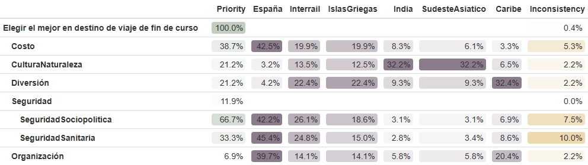

Este año, nos toca elegir el destino para nuestro viaje de fin de carrera, una decisión que implica considerar múltiples factores, tanto económicos como organizativos y personales.
Dado que se han propuesto varias opciones atractivas, se plantea la necesidad de aplicar un análisis multicriterio que nos permita tomar una decisión objetiva y equilibrada.
El objetivo del presente estudio es determinar cuál es el destino más adecuado para el viaje de fin de carrera utilizando distintas metodologías de decisión multicriterio implementadas en R.
Las alternativas consideradas son las siguientes:
Viaje al Caribe en un resort con todo incluido
Recorrido por España visitando las principales ciudades (Madrid, Barcelona, Valencia, etc.).
Viaje a la India con la finalidad de realizar un voluntariado social y cultural.
Viaje al Sudeste Asiático, recorriendo países como Indonesia, Vietnam o Camboya.
Crucero por las Islas Griegas, con paradas en diferentes destinos turísticos del Mediterráneo.
Interrail por Europa, visitando varias capitales y grandes ciudades europeas.
Para evaluar estas alternativas, hemos establecido cinco criterios de decisión que reflejan los aspectos más relevantes a considerar en la elección del destino:
Costo total del viaje (C1): incluye transporte, alojamiento y actividades. Este criterio debe minimizarse, ya que un menor costo es preferible.
Nivel de organización requerida (C2): mide la facilidad logística del viaje (coordinación, reservas, visados, etc.) teniendo en cuenta que somos un grupo de 20 personas. También se debe minimizar, porque un viaje más fácil de organizar es más conveniente.
Experiencia cultural y conexión con la naturaleza (C3): evalúa el grado en que el destino permite un aprendizaje cultural significativo y una inmersión en entornos naturales únicos. Este criterio considera tanto las oportunidades de interacción con diferentes culturas, tradiciones y formas de vida, como la posibilidad de disfrutar y valorar la naturaleza. Este criterio se maximiza, ya que se valora positivamente un destino que combine cultura y naturaleza de manera enriquecedora.
Diversión y ocio (C4): refleja las oportunidades de entretenimiento, descanso y actividades recreativas disponibles. Se maximiza.
Este criterio evalúa el nivel general de seguridad que ofrece cada destino, tanto desde el punto de vista sanitario como social o político. Dado que un entorno seguro contribuye positivamente a la experiencia del viaje, este criterio se maximiza.
Para lograr una valoración más detallada, el criterio se descompone en los siguientes subcriterios:
C5.1 Seguridad sanitaria: analiza el acceso a servicios de salud, las condiciones higiénico-sanitarias del destino y la existencia de riesgos sanitarios (enfermedades endémicas, vacunación requerida, calidad del agua, etc.).
C5.2 Seguridad sociopolítica: evalúa la estabilidad del país o región, el nivel de delincuencia, la seguridad ciudadana y la presencia de posibles conflictos o disturbios.
Ambos subcriterios se consideran relevantes para la elección final, y al ser aspectos que aportan valor al bienestar y tranquilidad del grupo, se maximizan.
# Comenzamos cargando las librerías necesariassource("teoriadecision_funciones_multicriterio.R")source("https://raw.githubusercontent.com/calote/TDecisionCodigo/refs/heads/master/teoriadecision_funciones_multicriterio_diagram.R")
El primer método que vamos a estudiar es el método AHP, este podemos implementarlo usando la librería de R ahp o con funciones de R
RESOLUCIÓN CON FUNCIONES DE R:
## NivelCriterios-Subcriterios:#CriteriosXmatrizC1=multicriterio.crea.matrizvaloraciones(c(1,5,2,2,3,1/5,1,1/3,1/3,1/2,1/2,3,1,1,2,1/2,3,1,1,2,1/3,2,1/2,1/2,1),5, c("Costo","Organización","CulturaNaturaleza", "Diversión", "Seguridad"))resC1=multicriterio.metodoAHP.variante3.basico(XmatrizC1)# Obtenemos los pesos de los criteriosresC1$valoraciones.ahp
Costo Organización CulturaNaturaleza Diversión
0.3864814 0.0694261 0.2121483 0.2121483
Seguridad
0.1197959
Caribe España India SudesteAsiatico IslasGriegas Interrail
[1,] 0.1197438 0.2563154 0.1299295 0.1204691 0.180871 0.1926399
RESOLUCIÓN CON LA LIBRERÍA AHP:
library(ahp)#ahp::RunGUI()library(formattable)datos =Load("ModeloTrabajo02.ahp") # archivo con la estructura del problemaCalculate(datos) # Calcular las prioridadesVisualize(datos) # Visualizar la jerarquia
# Analizamos# AnalyzeTable(datos)# AnalyzeTable(datos, variable = "priority")# Lo he dejado comentado porque al exportarlo a pdf se ven mal las tablas# Para exportar una "foto" de las tablas usamos los siguientes comandos:# export_formattable(AnalyzeTable(datos), file = "tabla.png")# export_formattable(AnalyzeTable(datos, variable = "priority"), file = "tablaPriority.png")

JUSTIFICACIÓN VALORACIONES DOS A DOS DE LOS CRITERIOS
Costo 5 vs Organización1: El costo es fuertemente preferido sobre la organización porque, al elegir un destino, el precio total del viaje suele ser un factor decisivo que condiciona completamente la viabilidad de la opción. Aunque la organización influye en la comodidad del viaje, el presupuesto determina si la alternativa es accesible o no.
Costo = 2 vs Cultura-Naturaleza= 1
El costo es débilmente más importante que el atractivo cultural y natural. Aunque los aspectos culturales enriquecen la experiencia, los usuarios suelen filtrar opciones primero por precio.
Costo = 2 vs Diversión = 1 El costo es débilmente más relevante que la diversión, porque aunque sea el viaje de fin de curso y hayan expectativas muy altas de pasárnoslo bien, si el precio se sale del presupuesto simplemente deja de ser una opción.
Costo = 3 vs Seguridad = 1
El costo es preferido frente a la seguridad. Aunque la seguridad es un aspecto relevante, en este contexto se valora que el presupuesto disponible es normalmente la principal restricción en la decisión inicial.
Organización = 1 vs Cultura-Naturaleza = 3
La cultura y naturaleza tienen un peso moderadamente superior a la organización porque un destino atractivo por su entorno y riqueza cultural hace que luego se olvide el trabajo organizativo que hya detrás. La organización influye en la logística, pero no determina el interés principal del viajero.
Organización = 1 vs Diversión = 3
La diversión es preferida sobre la organización porque la percepción general de disfrute del viaje pesa más que la estructura logística.
Organización = 1 vs Seguridad = 2
La seguridad es ligeramente más importante que la organización, ya que un destino seguro proporciona tranquilidad al viajero. Aunque la organización contribuye, un entorno seguro es un requisito más básico para disfrutar del viaje.
Cultura-Naturaleza = 1 vs Diversión = 1
Ambos criterios tienen la misma importancia. Se considera que el atractivo cultural/natural y la disponibilidad de actividades de ocio contribuyen de manera equilibrada a la experiencia general del viaje.
Cultura-Naturaleza = 2 vs Seguridad = 1
La cultura y la naturaleza son ligeramente más importante que la seguridad porque en una situación normal y teniendo en cuenta que dentro de lo que cabe todas las alternativas son destinos seguros, los viajeros suelen basar su elección en el valor paisajístico o cultural del destino.
Diversión = 2 vs Seguridad = 1
La diversión se valora moderadamente por encima de la seguridad porque la motivación del viaje suele estar ligada a disfrutar y realizar actividades distintas, y se asume que los destinos analizados cuentan con niveles de seguridad aceptables.
Para los subcriterios de Seguridad:
Seguridad Sanitaria = 1 vs Seguridad Política = 2
En la elección de un destino, la estabilidad socio-política suele tener un impacto más inmediato sobre la viabilidad del viaje, ya que problemas como conflictos, tensión política, protestas o inseguridad ciudadana pueden alterar directamente la movilidad y la experiencia del grupo. Aunque la seguridad sanitaria es relevante, en la mayoría de destinos existen medidas médicas, seguros y asistencia que mitigan relativamente ese riesgo.
JUSTIFICACIÓN VALORACIONES DOS A DOS EJEMPLO PARA EL CRITERIO ORGANIZACIÓN
Caribe = 1 vs España = 3
España es más fácil de organizar que el Caribe, ya que no requiere vuelos transoceánicos, ni visados… Aunque es una zona muy explotada turísticamente para la que se encuentra mucha información a día de hoy en internet, por tanto, el Caribe es ligeramente menos conveniente logísticamente.
Caribe = 3 vs India = 1
El Caribe es moderadamente más fácil de coordinar que India, donde se necesitan más visados, vacunas… Además el idioma también ayuda a la hora de organizar el viaje.
Caribe = 3 vs Sudeste Asiático = 1
Muy parecido a la justificación anterior, el sudeste asiático es una zona con más complicaciones a la hora de viajar, pues, requiere más visados, vacunas, desplazamientos internos… Por ello el Caribe es ligeramente preferida.
Caribe = 2 vs Islas Griegas = 1
El Caribe es algo más sencillo de gestionar que un crucero por las Islas Griegas, que requiere coordinar rutas, horarios de embarque y excursiones organizadas.
Caribe = 2 vs Interrail= 1
El Caribe es algo más fácil de organizar que un Interrail, donde el grupo debe gestionar horarios de trenes, desplazamientos frecuentes y alojamiento en múltiples ciudades.
España = 5 vs India = 1
España es muy superior a India en facilidad logística, ya que India exige visados, vacunas, desplazamientos complejos y adaptación cultural a la hora de buscar restaurantes, hoteles y excursiones.
España = 5 vs Sudeste Asiatico = 1
España es muchísimo más sencilla que el Sudeste Asiático, que implica varios países, vuelos múltiples y barreras idiomáticas.
España = 3 vs Islas Griegas = 1
España es más simple de planificar que un crucero por las Islas Griegas, pues al ser otro país esto nos va a dificultar la organización, así como los horarios del crucero, idioma…
España = 3 vs Interrail = 1
España se organiza mejor que un Interrail, debido a que Interrail implica cambios continuos de alojamiento y transporte, mientras que España permite un itinerario más estable y conocido.
India = 1 vs Sudeste Asiático = 1
Ambas presentan un nivel de organización similar, pues en ambos casos se requiere planificación sanitaria, visados en muchos casos y organización de múltiples actividades.
India = 1 vs Islas Griegas = 3
India es bastante más compleja que un crucero por las Islas Griegas, que suele tener actividades preorganizadas.
India = 1 vs Interrail = 3
India es moderadamnete más difícil de organizar que un Interrail, que aunque móvil, tiene infraestructura más similiar y familiar y planificación accesible en Europa.
Sudeste Asiático = 1 vs Islas Griegas = 3
El Sudeste Asiático es más complicado de coordinar que un crucero por las Islas Griegas, pues Grecia es más similiar a España, hay más información turística y facilidades.
Sudeste Asiático = 1 vs Interrail = 3
El Sudeste Asiático es más difícil de organizar que un Interrail, ya que los desplazamientos son más largos y de nuevo, para el Sudeste Asiático necesitaremos visados, vacunas….
Islas Griegas = 1 vs Interrail = 1
Ambos tienen un nivel de dificultad similar pues, los dos implican movimientos continuos, por ello en cuanto a la facilidad de organización son igualmente preferidos.
CONCLUSIÓN
De acuerdo con los resultados obtenidos observamos que según el método AHP el destinomás adecuado para el viaje de fin de carrera es España, con un peso global del 25,9%, seguido de Interrail (19,4%) e Islas Griegas (18,2%).
El criterio con mayor importancia global es el costo (38,7 %), lo cual refleja que el factor económico será el más determinante en la elección. Le siguen cultura-naturaleza (21,2 %) y diversión (21,2 %), mostrando que los aspectos de experiencia cultural y ocio también tienen un peso significativo. Por el contrario, los criterios seguridad (11,9 %) y organización (6,9 %) tienen menor influencia en la decisión final.
Observamos que el criterio de Seguridad estaba dividio en dos subcriterios, pues, la seguridad socio política (66.7%) es dos veces más importante que la seguridad sanitaria (33.3%)
En cuanto al desempeño por criterio observamos la tabla de pesos locales:
España destaca especialmente en los criterios de costo, seguridad y organización, lo que explica su posición como la mejor alternativa global.
Interrail y Islas Griegas logran buenas valoraciones equilibradas, aunque sin sobresalir tanto.
India y Sudeste Asiático obtienen puntuaciones altas en cultura y naturaleza, pero su mayor costo y la menor seguridad reducen su posición global.
Caribe también ofrece un buen equilibrio entre diversión y cultura, pero su elevado costo lo penaliza en el resultado total.
Los valores de inconsistencia obtenidos son aceptables en todos los criterios, salvo en Seguridad Sanitaria, donde se alcanza un índice del 10%. No obstante, al encontrarse justo en el límite establecido como admisible, consideramos que puede darse por válido. De lo contrario, sería necesario revisar las comparaciones realizadas para mejorar la coherencia.
En conjunto, podemos concluir que las comparaciones introducidas son coherentes y presentan un nivel de consistencia adecuado para el correcto funcionamiento del modelo AHP.
A partir de este punto, se emplearán los pesos globales obtenidos mediante el método AHP para continuar con el análisis multicriterio.
MÉTODO ELECTRE
Comenzamos definiendo la matriz y los pesos. Recuerda que como el coste y la seguridad queríamos minimizarlos debemos de cambiarle el signo a los datos correspondientes.
Organización = -4: Aunque es relativamente sencillo un resort “todo incluido”, coordinar un grupo de 20 personas en un destino remoto implica trámites migratorios, transporte desde el aeropuerto y logística extra, por lo que es menos fácil que España o Islas Griegas.
Cultura-Naturaleza = 2: El Caribe ofrece playas espectaculares pero, en muchos casos, menor inmersión cultural comparado con India o Sudeste Asiático debido a que se suele permanecer en el resort haciendo otro tipo de actividades.
Ocio = 5: Alto valor porque los resorts caribeños centran su oferta en ocio, descanso y diversión (deportes acuáticos, espectáculos, animación).
Seguridad Sanitaria = 6: Nivel relativamente bueno, con buenos resorts y atención turística, aunque algunos países caribeños tienen infraestructura sanitaria limitada.
Seguridad Socio-Política = 5: Buena, pero algunos destinos turísticos presentan niveles de delincuencia o inseguridad moderada frente a Europa.
El resto de valoraciones en las demás alternativas se han realizado de manera análoga siguiendo en el caso del criterio coste la búsqueda de vuelos con la web skyscanner, la agencia de viaje xcape y Tu Fin de Curso de Sevilla.
El criterio organización ha sido valorado más desde la experiencia personal y buscando el plan de vacunación y visados necesarios para cada uno de los lugares de destino.
Por último, los criterios de Seguridad Sanitaria y Seguridad Socio-Política han sido valorados atendiendo a diversos indicadores internacionales sobre estabilidad, sistemas sanitarios y riesgos para viajeros. En concreto, se han tenido en cuenta: los informes globales de seguridad sanitaria de la Organización Mundial de la Salud (OMS), el Global Health Security Index (GHSI), que evalúa la capacidad de los países para prevenir, detectar y responder ante riesgos sanitarios y el Global Peace Index (GPI) que clasifica a los países según estabilidad política, criminalidad, riesgo de conflictos y seguridad para los viajeros. Así como los avisos para viajeros del Ministerio de Asuntos Exteriores de España (MAEC), que identifican el nivel de riesgo en diferentes regiones.
CONCLUSIÓN
De acuerdo con el grafo de dominancia obtenido se observa que:
Interrail domina a todas las demás alternativas (Caribe, India, Sudeste Asiático, Islas Griegas y España), siendo la opción con mayor dominancia global.
España e Islas Griegas dominan a Sudeste Asiático, India y el Caribe, presentando así cierta fortaleza, pues dominan a varias alternativas, aunque son superadas por Interrail.
India y Sudeste Asiático muestran un comportamiento peor, pues son dominadas por varias opciones, pero aún logran dominar al Caribe.
Caribe no domina a ninguna otra alternativa, lo que la posiciona como la opción más débil del conjunto.
En consecuencia, el núcleo aproximado, está conformado por Interrail, pues, sobresale claramente frente a las demás.
Por tanto, según el método ELECTRE, el Interrail se considera la mejor alternativa para el viaje de fin de carrera, al presentar un equilibrio favorable en la mayoría de los criterios y una posición dominante respecto al resto de destinos analizados.
Tras aplicar el método PROMETHEE I, se observa que la alternativa España presenta el flujo entrante más alto, mientras que el flujo saliente más bajo corresponde a Interrail. Esto implica que Interrail es preferida frente a todas las demás alternativas, salvo España, con la cual resulta incomparable, dado que ambas muestran un equilibrio entre sus capacidades de dominar y ser dominadas.
Por su parte, España también es incomparable con Islas Griegas, ya que esta última presenta un flujo saliente menor.
La alternativa Islas Griegas se muestra preferida a India, Caribe y Sudeste Asiático, al superarles tanto en su capacidad de dominancia como en menor grado de ser dominada.
A continuación, se observa que India domina a Sudeste Asiático y al Caribe. Y finalmente, Sudeste Asiático domina al Caribe.
Por ello, el Caribe se sitúa como la alternativa menos favorable del conjunto analizado.
No obstante, veamos el método Promethee II que es quien me va a permitir ordenar de forma total las alternativas:
Con el método Promethee II concluimos que Interrail sería la alternativa preferida (al ser la de mayor flujo neto), seguida de las España, Islas Griegas, India, Sudeste Asiático, y por último, el Caribe.
Con el método axiomático de Arrow y Raymons concluimos que Interrail sería la alternativa preferida seguida de Islas Griegas, España, India, Sudeste Asiático, y por último, el Caribe.
Análisis paramétrico o de sensibilidad aplicación Método axiomático de Arrow y Raymond
Estudiamos cómo cambian las ordenaciones de las alternativas si se incrementa un determinado porcentaje las valoraciones de la primera alternativa en todos los criterios:
# ¿Qué posiciones ha tenido "a1" para los distintos valores de alfa?posiciones_a1 =rep(NA,length(intalpha))for (i in1:length(intalpha)) { posiciones_a1[i] =which(sols[[i]]=="Caribe")}posiciones_a1
El estudio de sensibilidad realizado mediante el método axiomático de Arrow y Raymond muestra cómo la posición del Caribe varía al aumentar progresivamente las valoraciones de la primera alternativa. Durante los primeros incrementos desde 1 a 1.7 (es decir, un 70%), la posición del Caribe se mantiene estable en el último lugar, lo que indica que los cambios pequeños en las valoraciones de la primera alternativa no afectan significativamente su ordenamiento relativo.
Sin embargo, a partir de un incremento superior o igual al 80%, la posición del Caribe mejora notablemente, pasando a 3º lugar y finalmente alcanzando el 1º lugar cuando el incremento es del 100%.
Esto evidencia que el ranking de alternativas es sensible a incrementos considerables en las valoraciones de las opciones.
CONCLUSIÓN FINAL
Interrail es la alternativa que emerge como más robusta frente a múltiples métodos de decisión estudiados, siendo señalada como la mejor opción en tres de los cuatro métodos aplicados (ELECTRE, PROMETHEE II y Arrow-Raymond).
Por otro lado, España constituye una opción muy competitiva y estable, situándose frecuentemente entre las primeras posiciones y especialmente destacando bajo el AHP y el método PROMETHEE I.